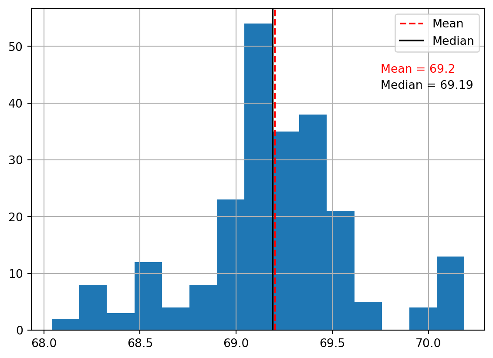

Estimate the change in the volume of water that was in the reservoir between summer, 2018 and February, 2024. This can be done using tools that we have already used in this class.
Mosaic DEM
The DEM is in tiles so you need to mosaic it. I used Raster > Conversion > Polygonize.
Find the approximate summer 2018 Water surface
This can be done using the 208 S2 image, or the DEM. Here we will use the DEM for this step.
To do this, first create a hillshade to visualize the DEM (here shown as red relief).The lake surface (as determined by the USGS) is easily visible as a perfectly flat area. Use the information tool to find the elevation of the lake surface (214.16 ft, shockingly close to sea level!). Then use the raster calculator and polygonize tool to segment out the lake surface (see Figure 1). Now you can calculate the 2018 lake surface area and you know the elevation (\(z_{2018} = 65.2759659112~\text{m}\)). (Some people may be happy to use this DEM as is and calculate the change in volume in acre-feet, but I would much rather have it in \(m^3\), so I converted the DEM values from ft to m (dem@1 / 3.28084 ).)
Note: For the raster calculator if yo us dem@1 = 214.16 you will probably get an empty raster. This is due to floating-point representation error. Instead use something like dem@1 > 214.15 AND dem@1 < 214.17
Figure 1: Lake surface in summer 2018 as estimated using the DEM
Next find the surface area and elevation of the lake surface in February, 2024. The process is similar to what that for 2018, but this time you will need to use the S2 image. Use the Modified Normalized Difference Water Index (MNDWI) to segment the lake surface. Calculate it with the raster calculator. Results should be similar to Figure 2.
Note: There are two SWIR bands in S2 imagery. After trying both I determined SWIR1 was better in this case. This makes sense, because SWIR2 is more sensitive to soil moisture. Here we only want the water surface.
Figure 2: MNDWI calculated using SWIR1 from Sentinel-2 median composite imagery for February 2024.
Then create a mask layer (MNDWI > 0) and polygonize (there will be other small polygons of small detached pools in the river above the reservoir, and below the dam. Extract the polygon of interest.) Now you have the surfaces (or inundation areas) for 2018 and 2024 as shown in Figure 3.
Figure 3: Approxinate extent of water in Lake Cachuma in summer, 2018 and February, 2024.
If you use the “Add geometry attributes” tool on the two surface areas (you may need to use “Fix geometries” first) then you now have \(z_{2018}\), \(A_{2018}\), and \(A_{2024}\). Now you need \(z_{2024}\). To get this, create points along the 2024 polygon (“Points along geometry”, I used 10m as interval). Now sample the raster at those points (“Sample raster values”). If you look closely at the map, and as can be seen in Figure 4, you will notice that many of the points actually fall a little inside the 2018 boundary, i.e. on the water surface from 2018. This is due to registration error (misalignment) and differences in resolution.
Figure 4: Some points in the 2024 water boundary fall inside of the 2018 boundary, which is nonsense.
One way of reducing the error from this phenomenon is to extract some points from places where the 2024 water boundary runs across relatively flay areas. In the locations horizontal displacements will only result in small vertical displacements (Figure 5)
Figure 5: Extracted points lying in fairly flat areas.
Now use Excel, QGIS plotting tools (which kind of stink), or some other software of your choice to create a histogram of the extracted points elevations (?@fig-hist).
#| fig-cap: "Histogram of extracted points with mean and median#| fig-label: "fig-hist"#| echo: false#| warning: false#| message: falseimport geopandas as gpdimport matplotlib.pyplot as pltdf = gpd.read_file('untracked_qgis/cachuma/flattish_points.geojson')mu =round(df.SAMPLE_1.mean(), 2)m =round(df.SAMPLE_1.median(), 2)ax = df.SAMPLE_1.hist(bins =15)ax.axvline(x=mu, color='red', linestyle='--', label='Mean');ax.axvline(x=m, color='k', label='Median');ax.legend();ax.text(0.77, 0.8, f'Mean = {mu}', transform=ax.transAxes, fontsize=10, color='red');ax.text(0.77, 0.75, f'Median = {m}', transform=ax.transAxes, fontsize=10, color='k');

THe results suggest that 69.2 is a good value to choose for \(z_{2024}\).
 to find the elevation of the lake surface (214.16 ft, shockingly close to sea level!). Then use the raster calculator and polygonize tool to segment out the lake surface (see
to find the elevation of the lake surface (214.16 ft, shockingly close to sea level!). Then use the raster calculator and polygonize tool to segment out the lake surface (see